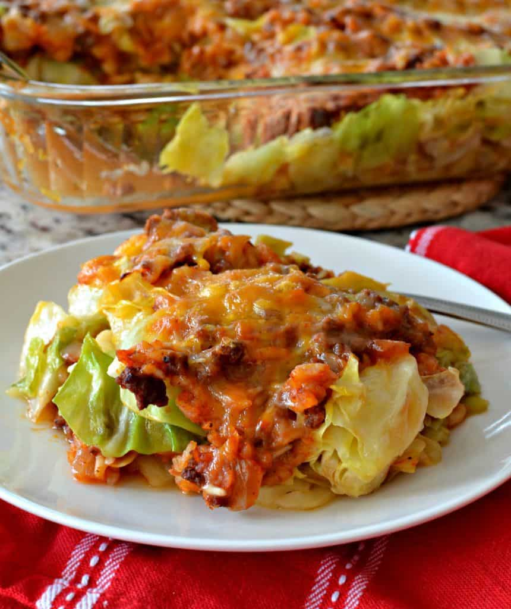

Cabbage Roll

Description
This Cabbage Roll recipe has all of the best parts of this classic dish! Cabbage, mince, onions, a perfect winter recipe!
Ingredients
- Cabbage
- Ground Beef Mince
- Onions
- Garlic
- Paprika
- Onion Powder
- Cayenne Pepper
- Brown Sugar
- Tomato Sauce
- Beef Broth
- Rice
Steps
- Begin browning the ground beef.
- Halfway through browning, add chopped unions and cook until beef is fully browned.
- Turn the heat to low, throw in garlic and cook for one minute.
- Drain excess fat.
- Add the remaining ingredients and bring to a low boil, then reduce to a simmer.
- Add a lid and simmer until the rice is soft.
- In a seperate skillet, cook half of the cabbage in a little olive oil until soft.
- Add the cooked cabbage to a casserole dish that has been prepared with a little olive oil.
- Add the beef mixture on top of the cooked cabbage, spreading around.
- Cook the remaining half of the cabbage in the same way, and spread on the top.
- Add grated cheese to the top, cover with foil and bake for 20 minutes.